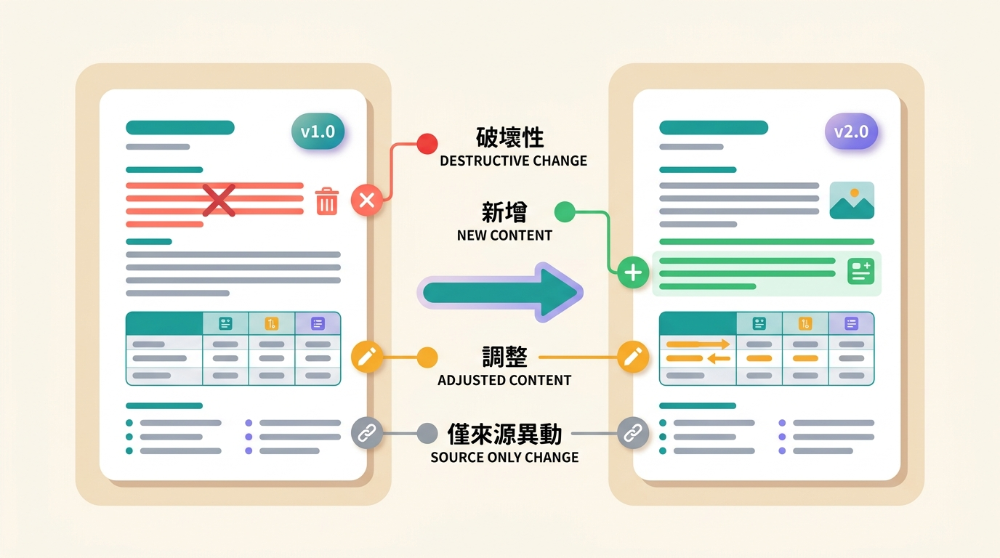
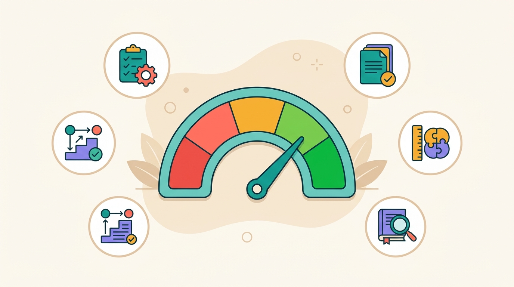
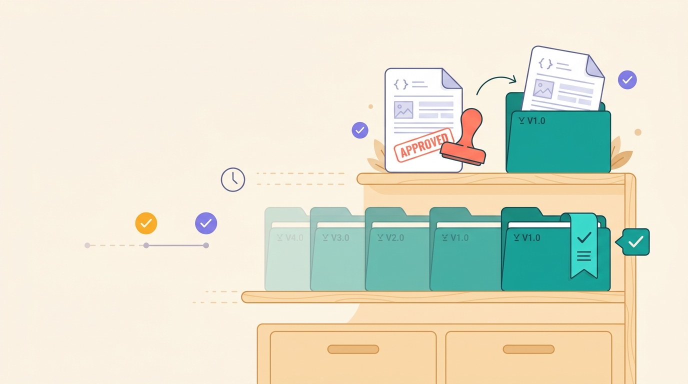

各家廠商的串接文件,格式亂、又常缺漏。loop-apidoc 像一座初步精煉爐,把混雜素材萃取成乾淨、查得到出處的標準說明,而且絕不自己亂編。
如果你想看原始碼、追版本或提 issue，先去 GitHub repo；如果你要直接跑擷取流程，照下面的安裝方式把 plugin / CLI 接好就能開始。
專案 GitHub 首頁 原始碼、commit、issue 與 workflow 都在這裡，GitHub Pages 也從這個 repo 發佈。 前往 GitHub repo →在 Claude Code 裡把本專案加成 plugin，agent 就能直接讀來源、組裝、驗證。CLI 由 plugin 內含，不必另外裝。
/plugin marketplace add CarlLee1983/loop-apidoc
/plugin install loop-apidoc@loop-apidoc-marketplace更新到最新版：/plugin marketplace update → /plugin update
Codex 不會帶 ${CLAUDE_PLUGIN_ROOT}，所以把 CLI 裝成全域指令，再把 skill 掛到 Codex 的 skills 目錄。
uv tool install --from /path/to/loop-apidoc loop-apidoc
ln -s /path/to/loop-apidoc/skills/loop-apidoc ~/.codex/skills/loop-apidoc當一個團隊要同時串接很多家外部服務時,光是「讀懂文件」就是一場硬仗,還藏著看不見的風險。
有的給你一份 PDF、有的丟一個網頁、有的是一堆程式碼檔。光是把它們「讀懂」就耗掉大把時間與耐心。
漏了關鍵欄位、沒寫清楚失敗時會怎樣。最危險的是 —— 有人為了趕進度,乾脆「用猜的」把空白補上去。
一個猜錯的小細節,上線後可能變成付款失敗、訂單遺失這種真實事故,事後才發現「原來文件根本沒這樣寫」。
把實作交給 coding agent 之後,程式寫得再快,規格餵錯就全錯。agent 的產出品質,取決於你給它的規格品質。
直接把 PDF 丟給 agent,遇到缺漏它會用「常見慣例」腦補:自動假設 OAuth、標準錯誤格式。串接金流時,這種貌似合理的猜測就是最貴的 bug。
整理後的 OpenAPI 與整合契約是 agent 可直接消費的規格——比每個 session 重讀幾十頁 PDF 更省、更穩,而且每個 agent、每個專案讀到同一份事實。
vibe coding 把人的角色從「逐行寫碼」移到「驗收規格與產物」。每句話都查得到出處、離線核對頁隨附,你才敢在 agent 的產出上簽名。
代價說在前頭:它要走完整的擷取→驗證→修正流程,比「直接問」花更多前置成本。判斷準則很簡單——整理結果會被寫進正式程式碼,就值得過閘;只是要看懂,直接問就好。
一句話:vibe coding 把「寫程式」變快了,「規格正確」就成了新的瓶頸——這個工具補的正是這個瓶頸。
文件沒寫的,它一律留白、並老實標記為「缺漏」,永遠不會用慣例或猜測來填。寧可明白告訴你「這裡缺了」,也不給你一份看起來完整、其實是編出來的文件。
你可以信任它的每一句話整個過程就像一位認真的整理師,把雜亂的資料一步步變成乾淨的成果。
把各種格式的文件餵給它 —— PDF、網頁、現成的規格檔,甚至一個公開網址都行。
一段一段擷取內容,像認真的讀者抄重點,但只抄文件真的寫的,絕不腦補。
把零散資訊重新拼組成一份統一、機器與人都能讀懂的標準規格。
自動驗證成果:有缺漏就回頭重讀補齊;真的查不到,就誠實標成「缺漏／衝突」,不硬填。
產出標準規格、看得懂的中文說明書、來源追溯,以及一份品質檢查報告。
從標準規格、中文說明書、來源追溯到品質報告,再加上一包能直接動工的開發者交付物,每一份都有明確用途,工程師到主管各取所需。
業界通用的標準格式,各種工具與工程師都能直接拿去使用,不必再各自解讀。
不只列出單一個端點,還把它們串成一條可執行的交易流程:先呼叫誰、拿到什麼、再帶進下一步,讓工程師知道整套怎麼接。
用繁體中文整理好的串接指南,不必再硬啃原文文件。
每一項內容都標明出自哪份文件、哪一段,經得起「這資訊哪來的?」的追問。
清楚列出哪裡完整、哪裡還缺,文件品質一目了然,不用憑感覺。
用瀏覽器就能離線打開的單頁,把範圍、來源、缺漏和 API 結構攤在一起,方便人眼快速複核。
附上三種語言的請求範例,以及可直接動工的交付包:整合任務清單、Postman 匯入檔、SDK 提示,工程師拿了就能開工。
就像論文會標注引用來源,loop-apidoc 產出的每個欄位、每條規則,都能追回是哪份來源文件、哪個段落寫的。
有人質疑「這個設定是哪來的?」時,你能立刻翻出對應的來源段落。
廠商更新了文件,新版到底改了什麼?loop-apidoc 能比較新舊兩版,把每一處變化標上四種「燈號」,讓你一眼判斷風險高低。
可能讓你既有的串接「壞掉」,要特別小心、優先處理。
多了新功能或新欄位,通常是安全的,不影響現有串接。
既有內容有改動,不一定危險,但值得花一分鐘看一下。
只是來源文件本身動了,最終規格其實沒變,可放心。

檢查報告告訴你「哪裡缺、能不能過」;評分再進一步,把文件品質換算成 0–100 分,方便長期追蹤、跨版本比較。分數只是儀表板,從不改變一份文件的通過與否。
規格正確性、完整度、一致性、來源依據、可複核性,五個維度加權後得出一個總分。
「上線把關」偏嚴格、適合自動化流程;「人工複核」較寬鬆、適合送審前自評。同一份文件,兩種視角。
每次修正都能看到分數往上走,團隊有明確的努力目標,不再靠感覺說「應該還不錯」。

跑出一份滿意的成果後,可以把它「收藏」進專案自己的文件資產庫,經過核准、標上版本,之後大家永遠取用同一份「現行版」,不再有人拿到過期的舊檔。
把一份跑完的成果匯入資產庫,先放在「候選」區,還沒正式生效。
確認沒問題就核准,系統把它複製成一份自足、標上版本號的正式資產,並讓舊版自動退位。
下游只要問「現在該用哪一份?」,系統就穩定指向最新核准的版本,大家永遠對齊同一份。

同樣一批來源文件,有沒有經過 loop-apidoc,差別非常明顯。
loop-apidoc 把「雜亂、不可靠的技術文件」,變成「乾淨、可信賴、查得到出處的說明書」。
兩段式架構、seam JSON、CLI 十五指令、驗證與修正迴圈,一頁看懂整條 pipeline。